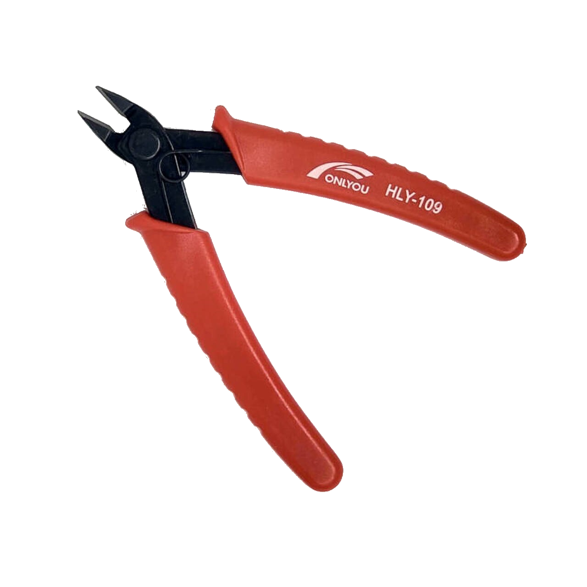

Removing support materials is a tedious but simple job. Instead of spending money on this service, one can easily buy the necesary tools and do it yourself. I do warn you to be carefull and not to stress the part to much as this can break when the stresses become to high. Also take into account the maximal stress is considerably lower perpendicular to the printing layers.
I would advice the following tools to be all set for this job:
